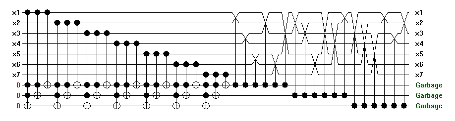

Whereas known circuits for hwb functions with no auxiliary bits exhibit exponential growth in size as the number of inputs increases, there is no evidence that this is not only because current heuristics fail to exploit the structure of hwb functions. However, as first noted by I. Markov and D. Maslov, a polynomial size reversible circuit with logarithmic number of ancillary bits may be constructed. In this straightforward approach, s=[log(n)]+1 auxiliary bits set to value zero need to be prepared. Then, for every input bit one applies circuit cycle1_s to this input value and s auxiliary bits. By the end of this computation, auxiliary bits contain input weight. Next, apply Fredkin gates to swap inputs of hwb. This results in the circuit, such as one illustrated below for hwb7 function with 7 inputs x1, x2, x3, x4, x5, x6, and x7. Input weight is accumulated on the 3=[log(7)]+1 auxiliary bits at the bottom of the circuit.

This circuit may be simplified to the following when one notices that it suffices to apply cycle1_k to the first 2k-1 input bits (counting bits starting with one) of the hwb function to properly calculate the input weight:
The circuit in the example above contains 35 gates and has the quantum cost of 203. It computes hwb7.
In general, circuits constructed by this approach require O(n log2(n))
gates.